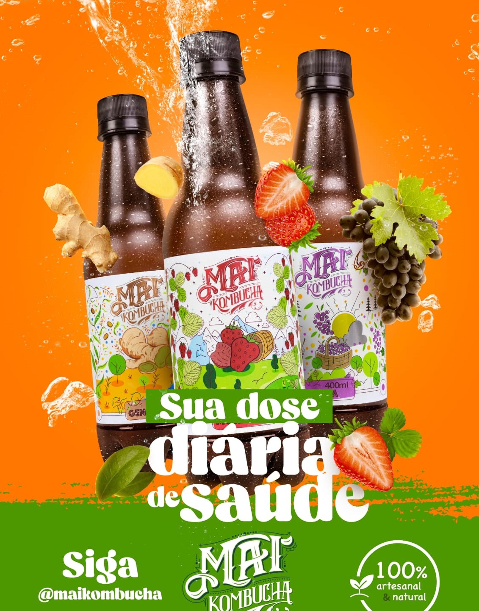


 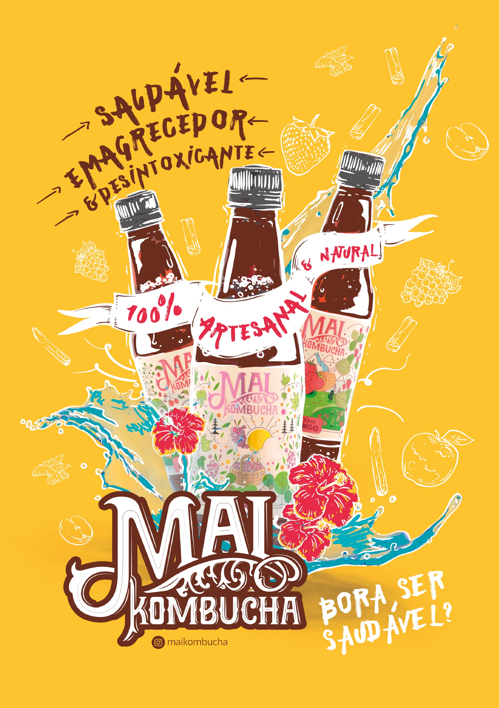
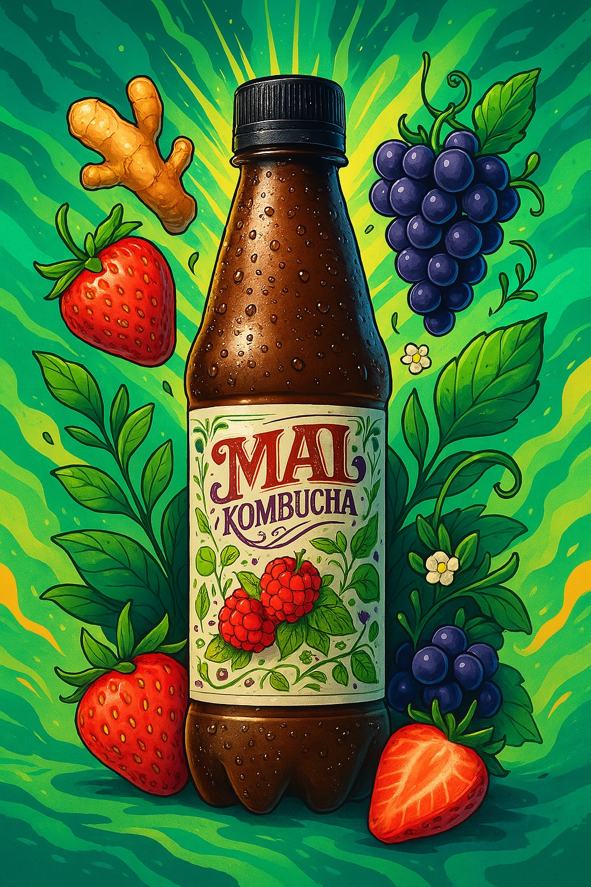
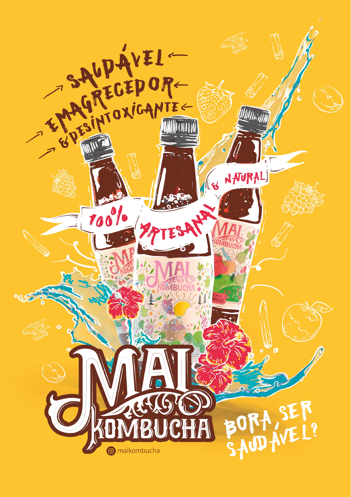
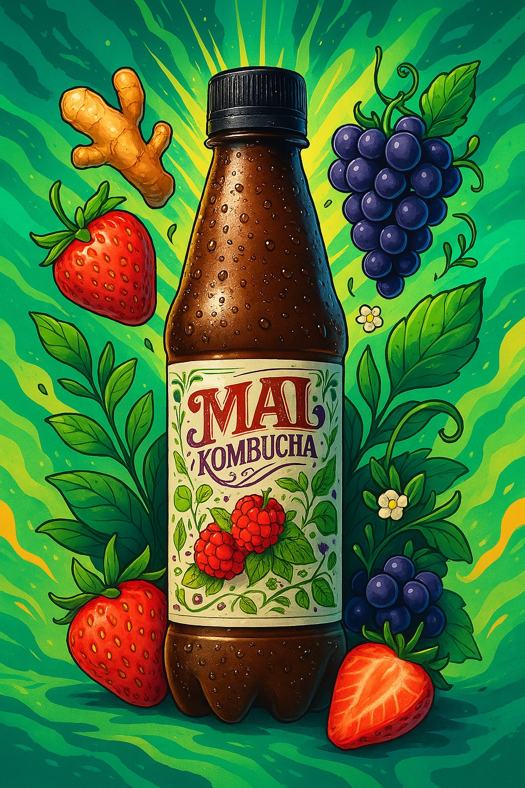
 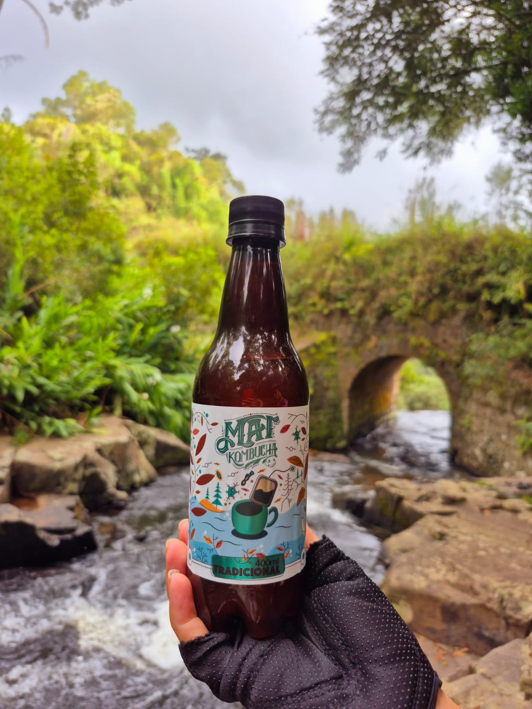
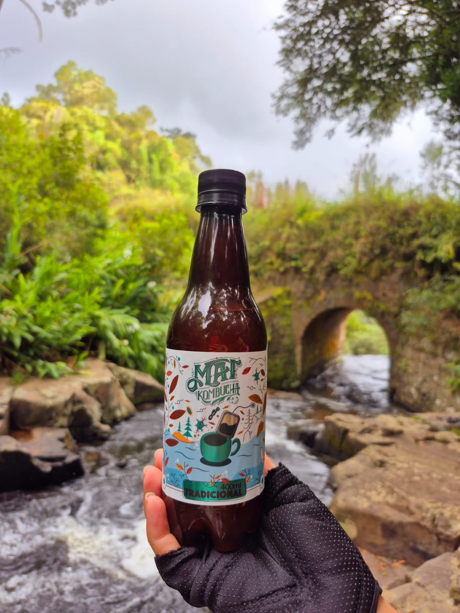


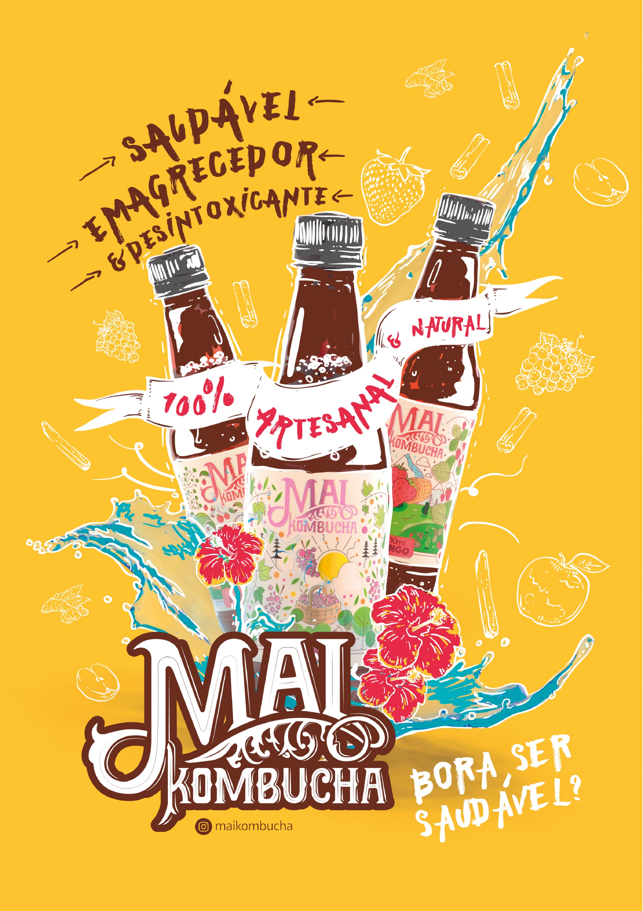
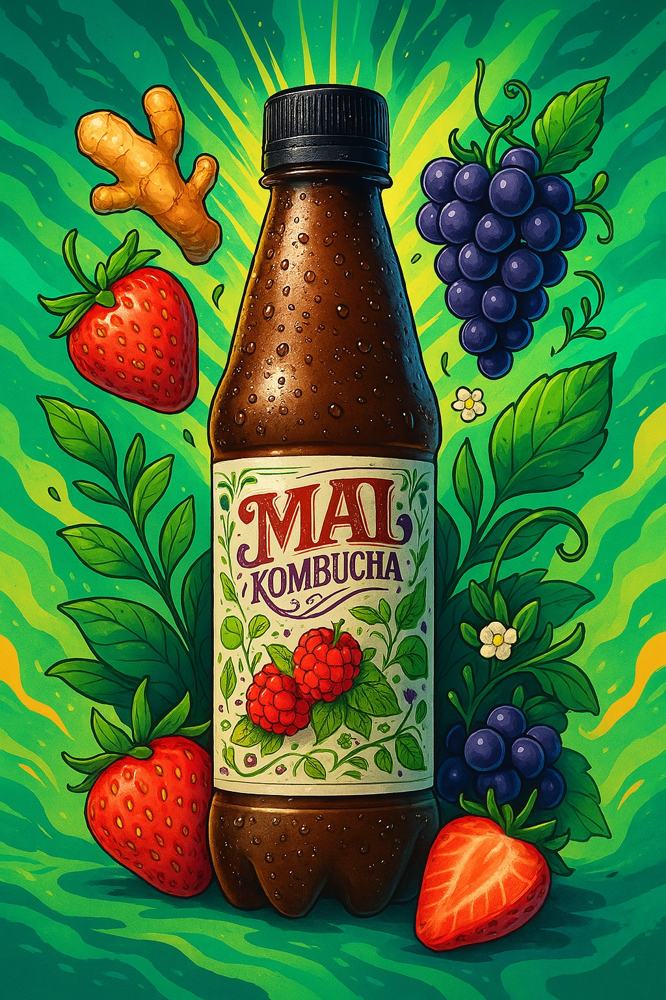
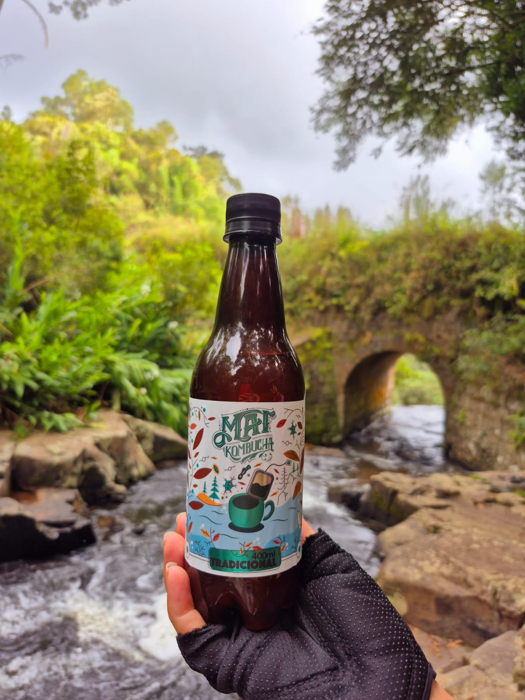
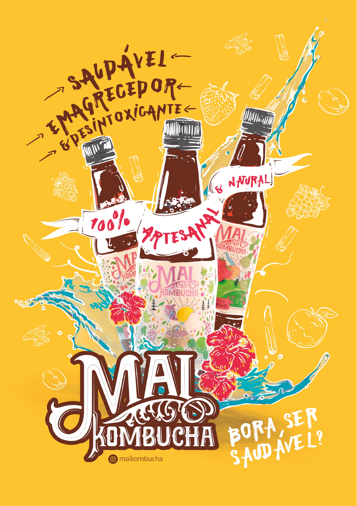
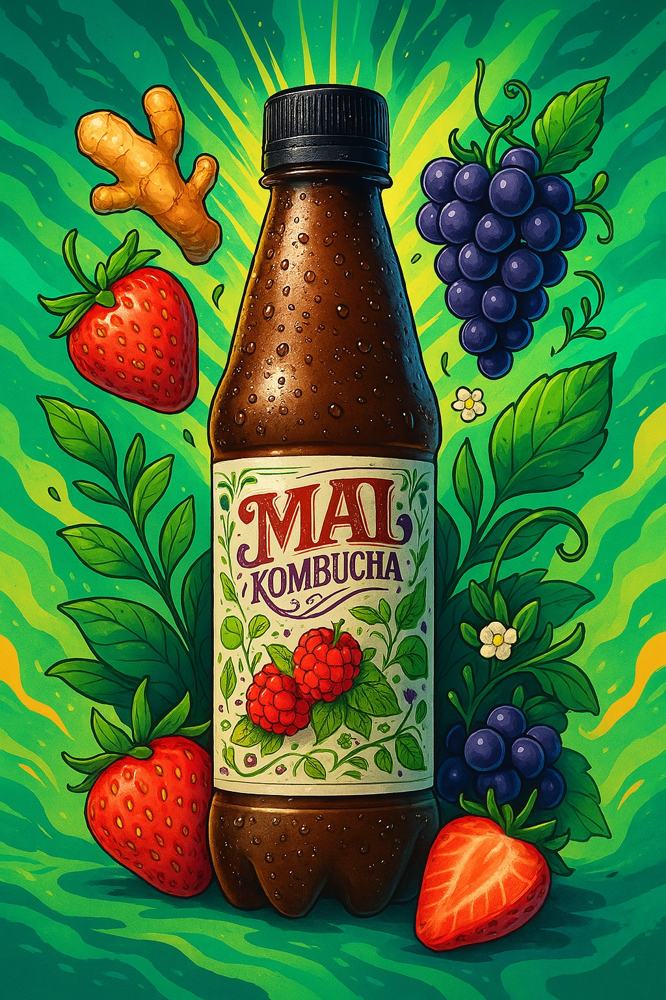
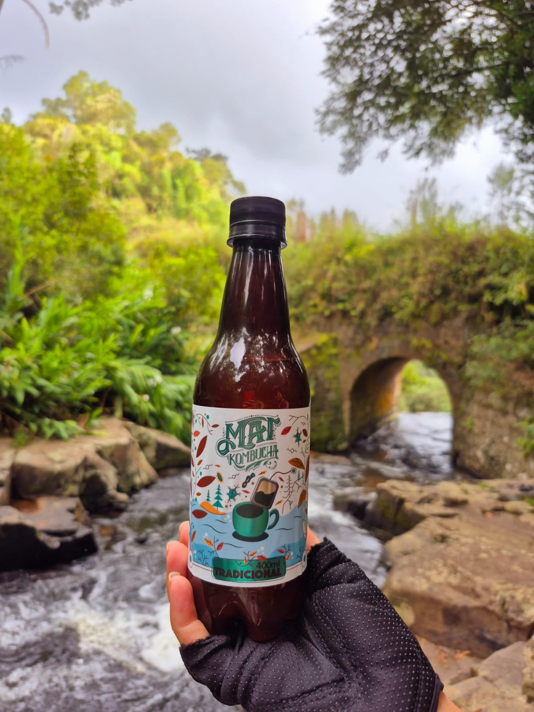
A Mai Kombucha nasceu em 2019 com um propósito simples: cuidar das pessoas. Descobrimos na kombucha uma bebida natural, cheia de benefícios para o corpo e a mente — e não conseguimos guardar só pra gente.
Desde então, trabalhamos para aprimorar cada detalhe, usando ingredientes naturais e muito cuidado para entregar um produto que faz bem de verdade.
Acreditamos que o que é bom pra gente também faz bem pro mundo. Por isso, seguimos fazendo nossa kombucha com carinho, transparência e respeito — pela sua saúde e pelo planeta.
.jpeg)
Sabor clássico com essência suave e refrescante. Ideal para quem quer conhecer a kombucha em sua forma mais pura.
Doce na medida certa, com um toque frutado intenso e final suave.
Levemente ácido com aroma envolvente de morango fresco. Refrescante e equilibrado.
Refrescante e picante, ideal pra quem curte um sabor mais marcante e cheio de personalidade.
Combinação tropical e refrescante. O abacaxi adocicado com o frescor da hortelã é perfeito para dias quentes.
Aromático, com notas quentes e reconfortantes. Um sabor que lembra o outono.
Delicado e e levemente floral, com um toque ácido característico do hibisco. Um verdadeiro detox natural.
Uma edição limitada feita com ingredientes da estação. Sempre uma nova descoberta!
Muito além de uma bebida da moda, a Kombucha
é um chá fermentado milenar que promove
e equilíbrio para
o seu corpo.
Rica em probióticos, ela ajuda na digestão,
fortalece o sistema imunológico e ainda refresca
com sabores
únicos. Aqui na Mai Kombucha,
unimos tradição, qualidade e um toque de
criatividade em cada garrafa.
Caminhadas, pedaladas, treinos, viagens ou um pôr do sol à beira-mar.
Leve a Mai Kombucha com você e descubra o sabor da leveza em cada momento.
Crianças a partir de 2 anos podem consumir Mai Kombucha. A bebida, é rica em probióticos, baixo nivel de acuçar, auxiliar no equilíbrio da flora intestinal e fortalecer a imunidade.
Leve a Mai Kombucha para o seu café, restaurante, academia, estúdio ou mercado natural. Ofereça saúde e sabor aos seus clientes com um produto artesanal, vibrante e cheio de benefícios.
Ideal para: Academias, Empórios, Restaurantes, Studios de Yoga, Lojas Naturais.
Quero Revender